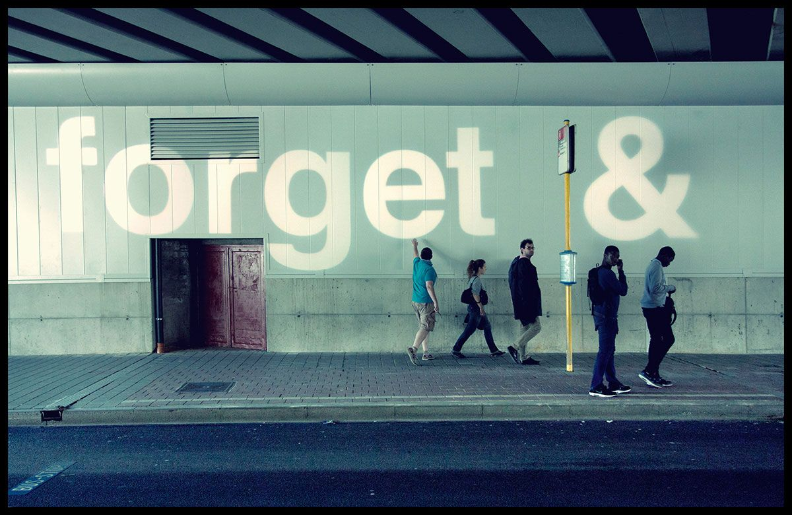
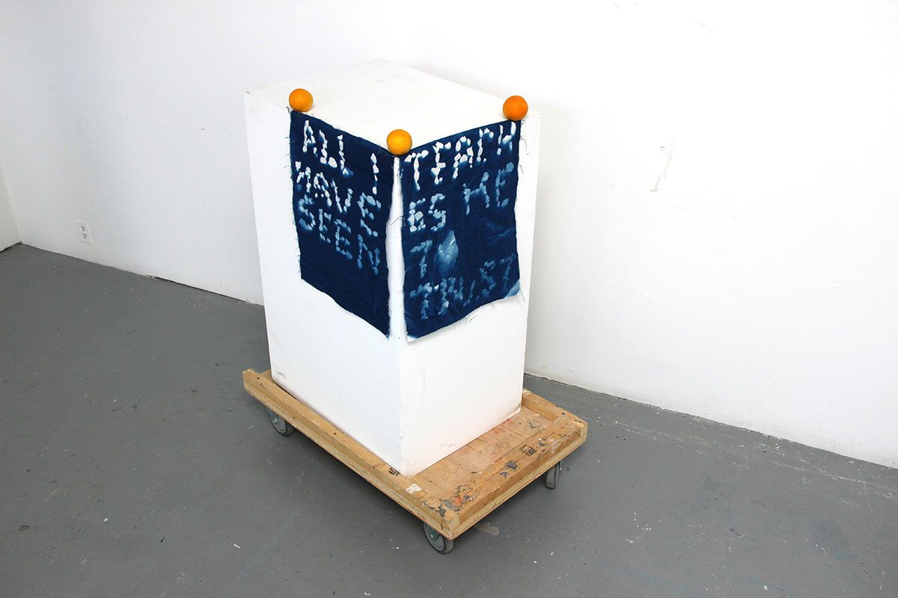

All things will never be all things

All i have seen teaches me to trust

Lotte Van den Audenaeren studeerde af aan de LUCA School of Arts (campus Sint-Lukas) in Brussel, waar ze een master behaalde in de beeldende kunsten. Ze studeerde aan de Koninklijke Academie voor Schone Kunsten (KASK) in Gent, ook hier behaalde ze een master in de beeldende kunsten en ontving ze de afstudeerprijs Legaat Franciscus Pycke. Vervolgens werd ze prijswinnaar van het ‘Coming People’ in het Stedelijk Museum voor Hedendaagse Kunst (SMAK) in Gent.
In 2012 is Van den Audenaeren toegetreden tot het ISCP residency-programma in New York City. Onlangs werkte ze aan projecten in Shanghai, Vancouver, San Diego, Mexico City en Brussel.
Lotte Van den Audenaeren heeft deelgenomen aan verschillende solo- en groepstentoonstellingen op nationale en internationale kunstlocaties en -instellingen.
Ze werd vervolgens prijswinnaar van het ‘Coming People’ in het Stedelijk Museum voor Hedendaagse Kunst (SMAK) in Gent. In 2012 is Van den Audenaeren toegetreden tot het ISCP residency-programma in New York City. Onlangs werkte ze aan projecten in Shanghai, Vancouver, San Diego, Mexico City en Brussel. Lotte Van den Audenaeren heeft deelgenomen aan verschillende solo- en groepstentoonstellingen op nationale en internationale kunstlocaties en -instellingen.
Voor haar lezing op 17 november 2017 koos Lotte Van den Audenaeren de titel ‘Right here’. Tijd is een van de enige dingen waar de mens geen grip op heeft. We kunnen het ‘nu’ niet benoemen, want op het moment dat je iets zegt is het eigenlijk al voorbij en behoord het reeds tot het verleden.
Ondanks het feit dat Van den Audenaeren twee masterdiploma’s heeft in de beeldende kunsten, ziet ze zichzelf als een artiest die geen vast medium heeft. Ze maakt zowel gebruik van de beeldende kunsten als van muziek, licht, etc. Ook wil ze als artiest zelden in de spotlights staan. Haar filosofie rond kunst gaat om het uit handen geven van je creatie zodat mensen er een nieuwe invulling aan kunnen geven.
Een eerste voorbeeld dat aan bod kwam in de lezing rond het uit handen geven van een werk was dat van ‘All things will never be all things’ (2014). Het is een permanente lichtinstallatie in de tunnel van Maelbeek in Brussel. In eerste instantie was het werk een anti-monument in transit zone. Licht heeft geen materialiteit. Naargelang het moment op de dag werd het werk zichtbaar of was het bijna niet te zien (dit was te wijten aan de natuurlijke lichtinval). Tijdens de terreuraanslagen op 22 maart 2016 werd het werk een soort van memorial en kreeg het een geheel andere betekenis dan initieel de bedoeling was. Het werk werd als het ware geclaimd door het publiek.
Ook haalde Lotte Van den Audenaeren enkele voorbeelden aan van meer muzikale werken. Ze heeft zelf niet van een opleiding in de muziek genoten, maar werkte samen met muzikanten en informeerde zich grotendeels bij hen. Een voorbeeld van een van haar muzikale werken is ‘The timekeeper’ (2014). Een geluidsinstallatie bestaande uit een metronoom, Marshall-versterker, audiomixer en microfoon.
Dat Van den Audenaeren iets met stenen heeft is allerminst overdreven. Ze maakt vaak lange stevige wandelingen en neemt regelmatig stenen mee uit de natuur die zij fascinerend vindt. Met die stenen maakt ze prints op doek en past Cyanotypie toe. Zo creëert ze iets nieuws door gebruik te maken van hun afdruk en reliëf. Een voorbeeld van zo’n werk is ‘All i have seen teaches me to trust’ (2016). Het was een werk voor het Banff Centre Residency in Canada.
Ze gebruikt niet enkel hun afdruk maar ook de stenen zelf. Een van haar meest bekende werken hierrond is ‘ALL STONES WILL BE RETURNED’ in Boston. Van den Audenaeren nam stenen mee uit Boston. Eerst vergulde ze hen met koper, daarna in zilver en vervolgens met goud. De kleine ‘gouden’ steentjes legde ze terug onder een brug in Boston. De stad waarvan men de indruk geeft dat deze zeer welvarend was kende ook een grote armoede die men liever onder de radar houdt. Vandaar dat Van den Audenaeren de stenen vergulde als kritiek op de verdoken armoede die gebukt ging onder de rijkdom van anderen en vervolgens teruglegde. Ook hier gaf ze haar werk uit handen. Wat er met de stenen gebeurt is weet ze niet. Misschien zijn ze gevonden door een druggebruiker, verkocht door een reeds zeer rijke zakenman of liggen ze er nog steeds onaangeroerd…